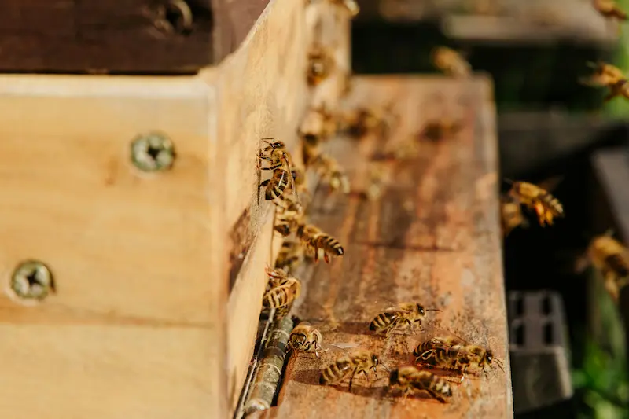

Pollination Explained (UK) – Why Bees Matter
Last updated: 1 May 2026
Pollination is one of the most important processes in nature — and it's happening all around us in the UK every spring and summer. When pollination works well, gardens thrive, hedgerows set fruit, and many crops produce better yields. When it's disrupted, the effects ripple through biodiversity, food production and the wider environment.
This guide explains how pollination works, why honeybees are such effective pollinators, what it means for UK crops and wildflowers, and the practical steps gardeners and beekeepers can take to support pollinators long-term.
It also connects pollination with the wider bee story: how bees make honey from nectar-rich forage, the body structures described in Honeybee Anatomy, the colony roles covered in Honeybee Facts, and the seasonal changes in the colony that shape pollinator activity across the UK year.
How Pollination Works (Simple Explanation)
Pollination happens when pollen is transferred from the male part of a flower (anther) to the female part (stigma). This allows fertilisation, leading to seeds and often fruit. Some plants self-pollinate, and some rely on wind — but a huge number benefit from insect pollination, especially when plants need pollen moved between flowers.
Bees are particularly good at this because they repeatedly visit flowers for nectar and pollen. As they move between blooms, pollen sticks to their bodies and is carried to the next flower — often improving the success of fertilisation. The same foraging journeys also feed directly into how bees make honey, because nectar gathered during pollination flights is carried back to the hive and processed into stores.
Why Honeybees Are Efficient Pollinators

Honeybees are not the only pollinators — bumblebees, solitary bees, hoverflies, moths and butterflies all matter — but honeybees have some features that make them very effective. If you want a broader overview of colony roles, see Honeybee Facts:
- Colony workforce: A healthy colony can deploy a large number of foragers when weather allows.
- Flower consistency: Bees often "work" one type of flower at a time, which can improve pollination success.
- Pollen handling: Their hairy bodies and pollen-carrying behaviour makes transfer between flowers more likely.
- Communication: Colonies coordinate foraging through behaviour and scent cues (see Behaviour).
Pollination in the UK: Crops, Gardens and Wildflowers
In UK landscapes, pollination matters in three big areas: food crops, gardens and wild habitats. A pollinator-friendly environment is one where flowers and nesting habitat are available across the seasons — not just during a single summer peak. This is why bee friendly gardening can make a real difference even in small spaces.
Examples of crops and plants that benefit from pollinators
| Category | Examples | Why pollination matters |
|---|---|---|
| Fruit | Apples, pears, plums, cherries, berries | Improves fruit set, shape and yields in many varieties |
| Vegetables | Courgettes, pumpkins, cucumbers, beans | Often improves fruiting success and consistency |
| Wildflowers | Clover, knapweed, thistles, bramble, hedgerow blooms | Supports seed production and long-term plant populations |
| Gardens | Herbs, flowering shrubs, ornamentals, "bee beds" | Encourages biodiversity and supports local pollinator networks |
Pollination vs Honey Production (They're Linked, But Not the Same)
Pollination is about plants reproducing. Honey production is about bees collecting nectar and turning it into honey as a food store. Bees often pollinate as a side effect of foraging — but the goals are different. In practice, both rise and fall with forage availability and the seasonal changes in the colony.
If you want to explore how nectar becomes honey, see: How Bees Make Honey.
Threats to Pollination in the UK
Pollination can be weakened by a combination of habitat, management and environmental pressures. In practice, these pressures often stack up together: fewer flowers, more forage gaps, more weather swings, plus stress from disease and parasites. Many of the simplest ways to reduce these pressures are covered in Help the Bees.
- Habitat loss: fewer flower-rich areas and nesting spaces.
- Forage gaps: long periods with limited blooms ("nectar gaps").
- Pesticide exposure: especially when flowering plants are treated.
- Disease and parasites: including varroa impacts in managed colonies.
- Weather swings: cold snaps, heavy rain and drought can reduce flight days.
For beekeeper-focused health issues, see: Varroa Management, Bee Diseases and Hygiene.
How Gardeners Can Help Pollinators (Simple, Practical Actions)

You don't need to be a beekeeper to support pollination. A garden, balcony or small patch of planted space can provide real value when it offers reliable food and shelter across the year.
- Plant for the seasons: aim for continuous bloom from spring to autumn.
- Leave some "wild corners": let clover, dandelions and native flowers appear.
- Provide shallow water: with stones or floats so insects can drink safely.
- Avoid spraying flowers: especially when plants are in flower.
- Reduce perfection: fewer tidy removals = more habitat for insects.
For a full planting approach and practical UK-friendly ideas, go to: Bee Gardening and Help the Bees.
How Beekeepers Can Support Pollination Responsibly
Beekeeping and pollination are naturally linked, but good pollination outcomes come from healthy colonies and sensible decisions. Strong beekeeping basics still matter most: space, swarm control, nutrition awareness, and disease prevention.
- Keep colonies healthy: stay on top of varroa and hygiene habits.
- Manage swarm risk: so colonies remain stable and productive during flows.
- Place apiaries wisely: avoid poor forage areas and consider neighbours.
- Track what's happening: forage, weather, strength, temperament and brood patterns.
Your monthly focus changes through the season — see: Year in the Apiary.
If you want a simple system for inspection notes, forage observations, and seasonal patterns, use: HiveTag. Consistent records make it easier to understand when pollination is strongest and when your colonies may be under stress.
Pollination FAQ (UK)
Pollination is the transfer of pollen from the male part of a flower to the female part. It helps plants produce seeds and fruit. Many UK plants benefit from insects like bees moving pollen between flowers.
Bees are efficient flower visitors. They forage repeatedly and carry pollen well, helping crops and wildflowers set fruit and seed. Supporting pollination strengthens biodiversity.
Honeybees matter, but wild pollinators are also essential. Different insects suit different flowers and conditions. The best outcomes come from landscapes that support a wide mix of pollinators.
Many fruits and fruiting crops benefit from insect pollination, including apples, pears, berries, beans and courgettes. The level of dependence varies by crop and variety.
Pollination is plant reproduction. Honey production is bees collecting nectar and processing it into honey for storage. Bees often pollinate while foraging, but the processes are different.
Habitat loss, forage gaps, pesticide exposure, disease/parasites and weather swings can all reduce pollinator health and activity. These pressures often stack together over time.
Plant for continuous flowering, avoid spraying flowers, provide shallow water and allow some areas to grow naturally. See Bee Gardening.
Keep colonies healthy, manage swarm risk, place apiaries sensibly and keep clear records. The Varroa guide and Hygiene guide help with the basics.
A nectar gap is a period when few flowers are available. It can weaken colonies and reduce pollination. Planting for the seasons helps reduce gaps.
Pollination activity rises and falls with colony strength and forage availability. The monthly calendar helps you see what's happening through the seasons and understand the seasonal changes in the colony more clearly.
Yes. Logging forage, weather, colony strength and inspection notes helps you understand patterns. See HiveTag.